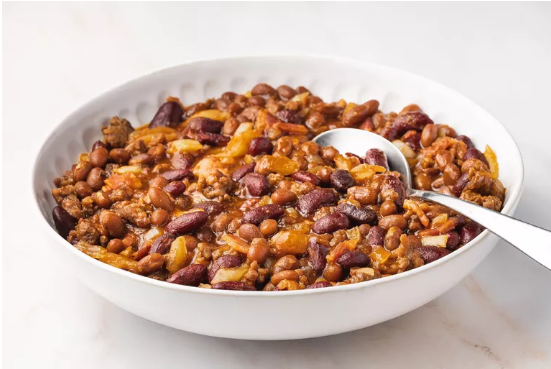

Beans

Description
How to make Porridge Beans
Ingredients
- Raw beans
- Red oil
- Diced onions
- Grinded fresh pepper
- Grinded garlic and ginger
- Grinded crayfish
- meat stock
- Spices eg: maggi, salt
Steps
- Pick the raw beans (Separate the beans from the debris)
- Wash the picked beans with water and perboil till it's soft
- Seive the perboiled beans and leave in seive
- Pour some red oil in a pot on fire and when it is a bit hot, add the diced onions and stir to bleach a little
- Add the reamining ingredients and spices to the sauce
- Now add the perboiled beans in the sauce and add water to cover the beans
- Taste the porridge and add required spices if necessary
- Leave to cook
- Your porridge beans is ready, dish and enjoy